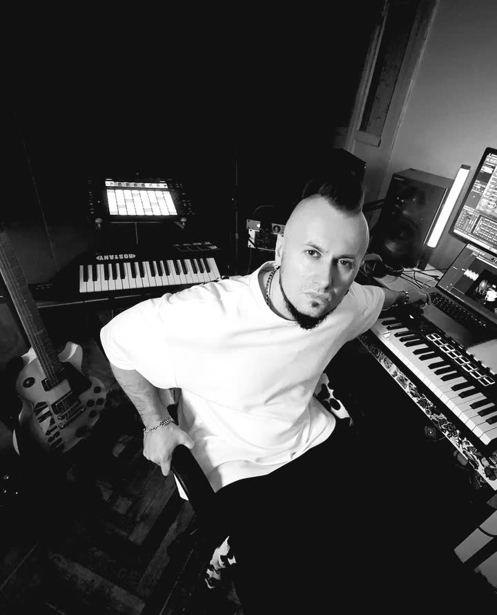
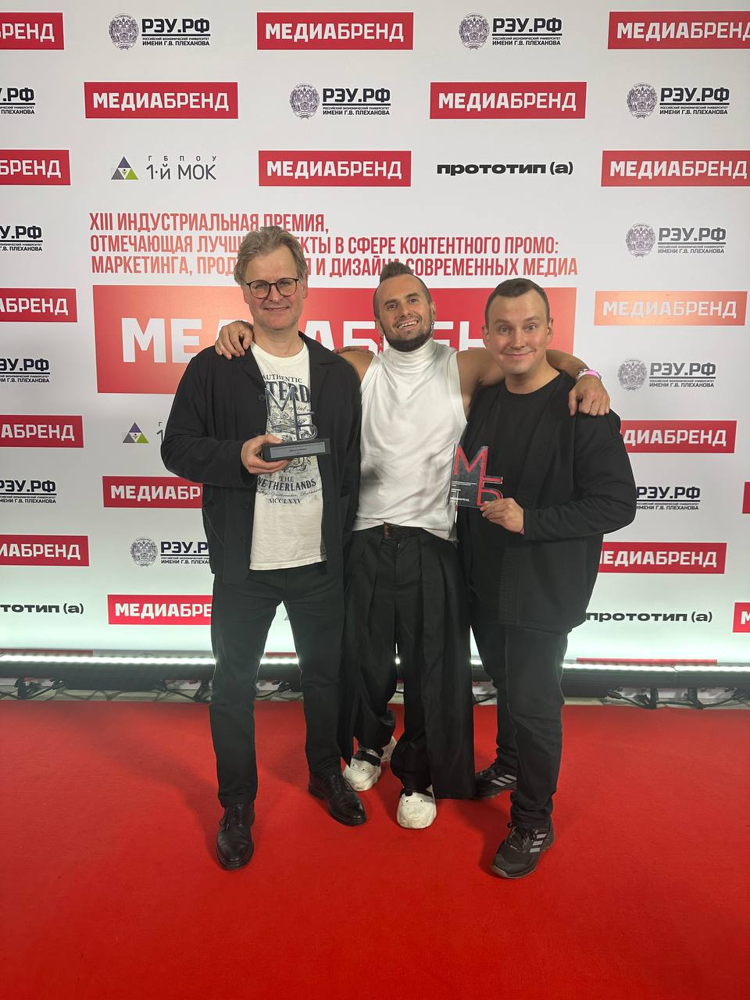
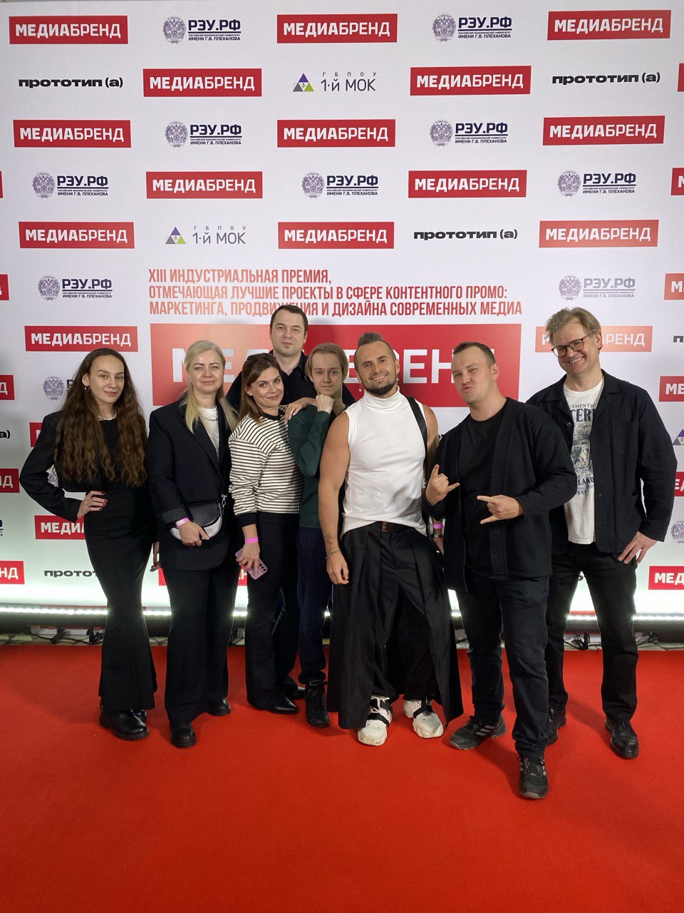
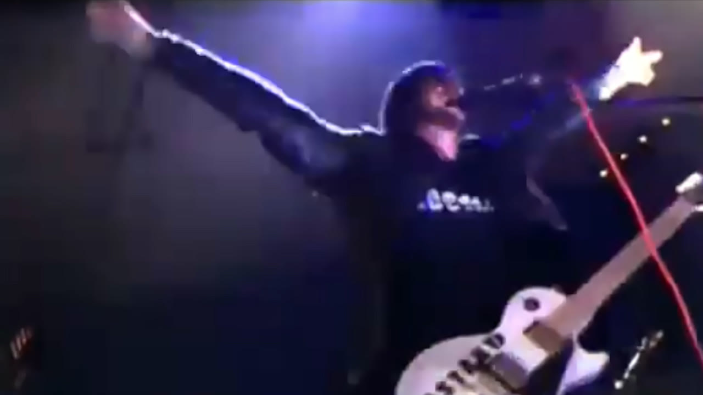

3 место · viju+ Premiere
Обезьяна
«Лучший проморолик фильма/сериала иностранного производства»
Трейлер хоррора по рассказу Стивена Кинга: напряжение на деталях, ритме и звуке. Музыка и звук — Vic Torr.

Саунд-дизайн · Музыкальный продакшн · Саунд-брендинг
Музыка и звук, по которым бренд узнают с первых секунд, — для телеканалов, рекламы и больших событий. Совмещаю опыт композитора и продюсера с образованием в PR и рекламе: звук здесь — часть коммуникации, а не фон.
Медиабренд-2025 · 1 и 3 место среди ~280 проектов финала
Свой звук мне доверили
Задача → решение
«Бренд не узнают на слух»
Звуковой логотип и музыкальная платформа: пятнадцать секунд — и канал узнают с закрытыми глазами.
Саунд-брендинг viju«Промо теряется в эфире»
Музыка и звук, которые держат внимание до последнего кадра. Два таких ролика взяли «Медиабренд-2025».
Ролики-призёры«Событию не хватает момента»
Оригинальная увертюра или открытие, которые задают вечеру драматургию — как для СберПрайм.
Большие сцены«Звучим как все»
Музыка пишется с нуля под ваш бренд, а не подбирается из стоков. Один автор на весь цикл — от концепции до мастера и адаптаций.
Что я делаюViasat Global · viju
Два промо-ролика viju с моей музыкой и звуком отмечены XIII индустриальной премией «Медиабренд», которая отмечает лучшие проекты в сфере контентного промо. В финале было около 280 проектов от 56 компаний.
3 место · viju+ Premiere
«Лучший проморолик фильма/сериала иностранного производства»
Трейлер хоррора по рассказу Стивена Кинга: напряжение на деталях, ритме и звуке. Музыка и звук — Vic Torr.
1 место · золото
«Лучший проморолик познавательной/образовательной программы»
Детское шоу собственного производства viju с пончиками Ви и Жу. Музыка и звук — Vic Torr.
Церемония · 2025
1 и 3 место
среди около 280 проектов от 56 компаний
Церемония XIII премии «Медиабренд», РЭУ им. Г. В. Плеханова, 2025.


Звуковые логотипы · viju TV1000
Пятнадцать секунд, за которые канал узнают с закрытыми глазами. Звуковые логотипы и музыка оформления — часть большой работы: вся музыка и саунд-дизайн 15 каналов viju+.
Звуковой логотип · 15 с
Звуковой логотип · 15 с
Звуковой логотип · 15 с
Музыка под событие
Сбер · СберПрайм
Увертюра «Цветок и Цунами»
Оригинальная композиция, написанная под событие СберПрайм: музыка, которая открывает вечер и задаёт ему драматургию.

Беларусь 1 Телевершина Смотреть фрагментБеларусь · телеэфир
Телевершина
Музыкальное оформление и живое выступление на церемонии главной телевизионной премии Беларуси.
Нужен звук такого уровня для вашего бренда, канала или события?
Обсудить задачуПочему со мной
Награды индустрии
1 и 3 место «Медиабренд-2025» среди около 280 проектов от 56 компаний.
Масштаб телесети
Вся музыка и саунд-дизайн 15 каналов viju+ — единая звуковая система, а не разовый трек.
Говорю на языке маркетинга
Образование в PR и рекламе: понимаю бриф, аудиторию и KPI — и перевожу их в звук.
Напрямую с автором
Без посредников: композитор, саунд-дизайнер и продюсер в одном лице ведёт проект от идеи до мастера.
Опыт
Образование
Общественная деятельность
Компетенции
Пиарщик, бренд-специалист и музыкант в одном человеке.
Звуковая айдентика бренда и канала: аудиологотип, музыкальная платформа, правила звучания. Вся музыка и саунд-дизайн 15 каналов viju+.
Музыка и звук для трейлеров, промо-роликов и оформления эфира. Награды «Медиабренд-2025».
Увертюры, открытия и музыкальное оформление церемоний и телеэфиров.
Сонграйтинг, аранжировка, живые инструменты, сведение и мастеринг — полный цикл в одних руках.
Задача бренда, аудитория, каналы и сроки.
Как бренд должен звучать и что слушатель должен почувствовать.
Музыка, саунд-дизайн, сведение и мастеринг под эфир и digital.
Версии и хронометражи под все носители и площадки.
Найдём, как звучит ваш бренд
Опишите задачу в двух словах — отвечу лично и предложу, с чего начать.
Написать в TelegramНаписать или позвонить